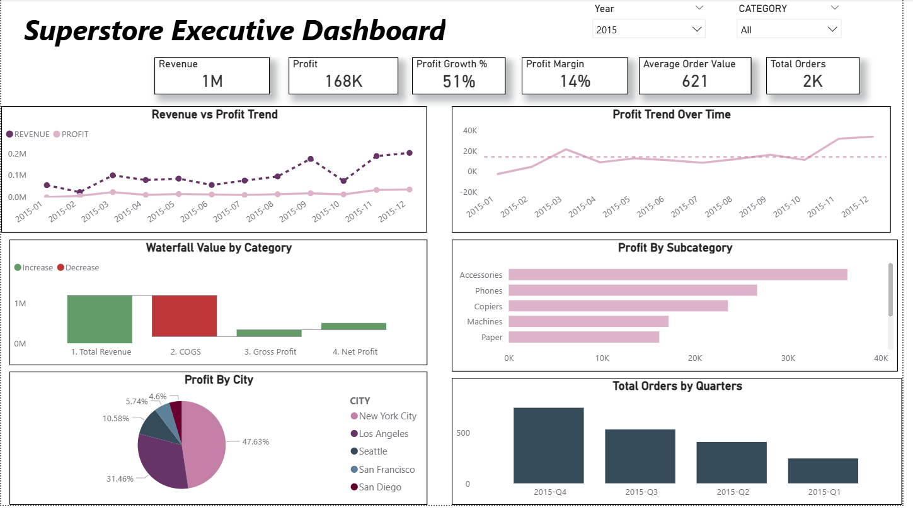

This stage presents the final business insights generated from the cleaned and transformed dbt marts. The dashboard was created in Power BI to analyze sales, profit, customers, products, and operations.

The Power BI dashboard helps translate the transformed data into clear, visual, and actionable insights. It allows users to monitor business performance and identify trends across sales, customers, products, and operations.